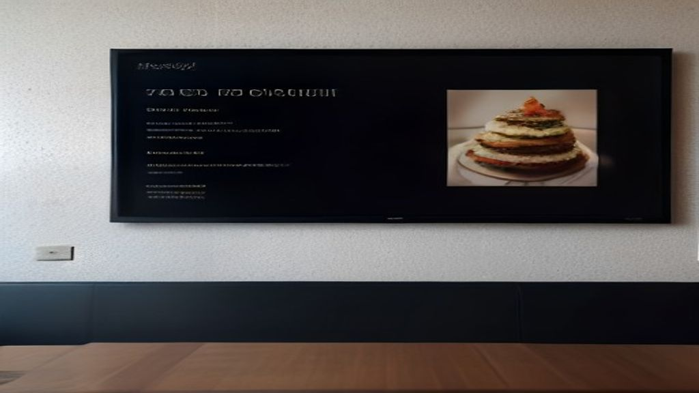
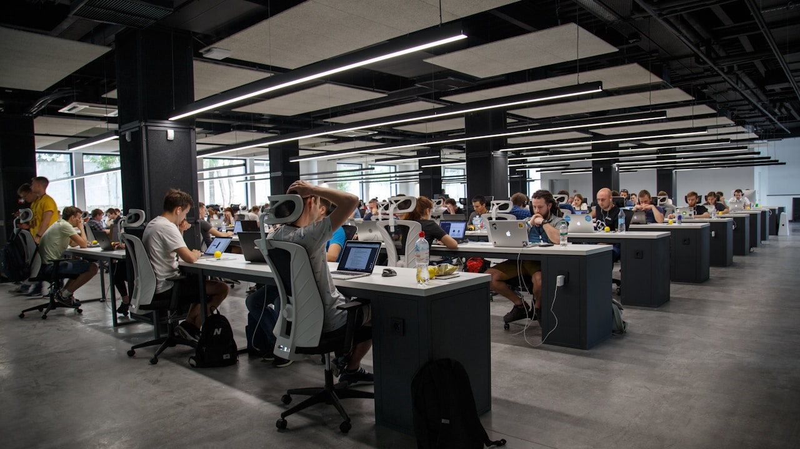

Affichage Dynamique au Maroc : Définition Stratégique et Enjeux Actuels
En résumé : Affichage Dynamique au Maroc : 7 Erreurs Qui Vous Font Perdre 250 000 MAD par An (et Comment les Éviter en 2026) est une démarche stratégique clé dans le domaine du Affichage Dynamique. Elle permet aux entreprises au Maroc d’optimiser durablement leurs performances digitales, d’augmenter leur visibilité et de maximiser le retour sur investissement (ROI) de leurs campagnes.
L'affichage dynamique au Maroc désigne l'utilisation d'écrans numériques (LED, LCD, vidéo-mapping) connectés à un logiciel de gestion centralisée pour diffuser du contenu ciblé (publicités, informations, promotions) en temps réel. En 2026, cette technologie est devenue un levier majeur d'acquisition client pour les marques marocaines, permettant de capter l'attention d'une audience mobile-first dans les centres commerciaux, les rues commerçantes de Casablanca, les aéroports et les espaces de vente. Cependant, une exécution bâclée transforme ce puissant outil en gouffre financier.
Pourquoi Votre Investissement en Affichage Dynamique au Maroc Échoue (Analyse ROI)
Le marché marocain est en pleine effervescence digitale. Les entreprises de Casablanca, Rabat, Tanger et Marrakech se ruent vers l'affichage dynamique. Le problème? Beaucoup foncent tête baissée, séduites par la promesse d'une vitrine futuriste, sans stratégie de contenu ni analyse des coûts cachés. Résultat : des écrans qui affichent des contenus obsolètes, des pannes fréquentes et un retour sur investissement (ROI) désastreux. Un écran LED de 75 pouces de bonne qualité coûte entre 25 000 et 80 000 MAD hors installation. Avec la maintenance, le logiciel et le contenu, l'investissement annuel dépasse facilement les 120 000 MAD pour un réseau de 3 écrans. Si votre affichage ne convertit pas, vous ne perdez pas seulement l'investissement initial, vous perdez le coût d'opportunité : ce que ces 120 000 MAD auraient pu générer en campagnes Google Ads ou en SEO local performant.
Erreur N°1 : Confondre Écran LED et Stratégie d'Acquisition Client
C'est l'erreur la plus répandue au Maroc. On achète un écran comme on achète une imprimante. On l'installe, on y met un PowerPoint des promotions et on attend. C'est une catastrophe. Un écran dynamique est un canal d'acquisition à part entière, comme un site web ou une page Google Ads. Il doit avoir un objectif clair (générer du trafic en boutique, vendre un produit spécifique, augmenter le panier moyen), un message unique et un appel à l'action (QR code, code promo, adresse du magasin). Prenons l'exemple d'une boutique de téléphonie à Tanger : elle a installé deux écrans pour 45 000 MAD. Le premier mois, elle diffusait un simple défilement d'images. Résultat : 0 vente directe attribuée. Après notre audit, nous avons mis en place un scénario dynamique : un compte à rebours pour une offre flash, un QR code renvoyant vers une page de réservation et la mise en avant d'un produit vedette avec son prix. Le mois suivant, 35% des clients en boutique ont cité l'écran comme source de leur venue. Le ROI est devenu mesurable en quelques semaines.
Erreur N°2 : Sous-Estimer le Coût Total de Possession (TCO) et le Budget Caché
Les décideurs marocains regardent souvent uniquement le prix d'achat du matériel. Grave erreur. Le coût total de possession (TCO) inclut la maintenance préventive (nettoyage des filtres, vérification des câbles, mise à jour logicielle), le coût de l'électricité (un écran pro consomme entre 150 et 300 watts/heure), et surtout le coût de la création de contenu. Si vous n'avez pas un graphiste dédié à 6 000 MAD/mois, vos écrans seront remplis de contenus génériques et moches. Un autre piège : les pannes. Sous la chaleur de Marrakech ou l'humidité de Casablanca, les écrans non adaptés à un usage commercial tombent en panne. La réparation d'une carte mère peut coûter 8 000 MAD. Nous avons vu des restaurants à Rabat perdre 15 000 MAD en réparations sur une seule année pour des écrans grand public. La solution? Investir dans du matériel de qualité commerciale (Samsung, LG, Philips) avec une garantie constructeur de 3 ans. Oui, cela coûte 30% plus cher à l'achat, mais le coût de possession est divisé par trois sur 5 ans.

Erreur N°3 : Négliger le Logiciel et la Gestion de Contenu (CMS)
Le matériel n'est que la moitié de l'équation. L'autre moitié, c'est le logiciel de gestion (CMS) qui permet de programmer, diffuser et analyser le contenu. Beaucoup d'entreprises marocaines choisissent des logiciels low-cost ou des solutions gratuites basiques. Résultat : impossible de programmer des contenus différents selon les heures de la journée (ex: promos matinales vs offres du soir), pas de statistiques de lecture, pas d'intégration avec les réseaux sociaux ou les flux de données (météo, stock). Un bon CMS coûte entre 300 et 1 500 MAD par écran et par mois. C'est un investissement indispensable. Il vous permet de modifier un prix en 30 secondes depuis votre smartphone, de programmer une campagne spéciale pour le Ramadan ou la fin d'année, et surtout de mesurer l'impact en temps réel. Sans ces données, vous pilotez à l'aveugle. À Casablanca, une grande enseigne de cosmétiques a investi dans un CMS avancé. Elle a pu identifier que ses écrans en vitrine convertissaient 2,5 fois plus entre 17h et 20h. Elle a adapté sa programmation pour ces heures critiques et a vu son trafic en boutique grimper de 22%.
Erreur N°4 : Ignorer les Contraintes d'Installation et les Normes Marocaines
L'installation ne s'improvise pas. Au Maroc, il existe des normes électriques et de sécurité spécifiques. Beaucoup d'installateurs « low-cost » ne les respectent pas. On a vu des écrans installés en plein soleil (rendant l'image invisible), des câblages non protégés, ou des fixations fragiles sur des murs en plâtre. En cas d'accident, la responsabilité civile de l'entreprise est engagée. De plus, certaines municipalités (Casablanca, Marrakech) exigent des autorisations pour l'affichage extérieur. Ignorer ces règles peut entraîner des amendes allant jusqu'à 50 000 MAD et le démontage forcé de vos équipements. Un audit préalable du site est crucial. Il faut évaluer la luminosité ambiante (pour choisir la bonne luminosité en nits), la distance de vision (pour choisir la taille de l'écran), et la structure du mur. Un professionnel comme DatRey réalise une étude de faisabilité complète avant toute installation. Cela vous évite des coûts cachés et des tracas juridiques.

Erreur N°5 : Créer un Contenu Inadapté au Support et à l'Audience
Un écran n'est pas un document PDF. Le contenu doit être conçu pour être lu en 3 secondes. Les textes doivent être courts, les images de haute qualité, et l'appel à l'action clair. Trop d'entreprises marocaines diffusent des documents A4 remplis de texte. C'est inutile. De plus, il faut adapter le contenu à l'audience. Un écran dans un centre commercial à Rabat ne doit pas diffuser le même message qu'un écran dans un hôtel à Agadir. La psychologie du consommateur diffère. Dans le retail, il faut des visuels produits percutants. Dans la restauration, des vidéos de plats qui donnent faim. Dans le secteur B2B (showroom), des études de cas et des témoignages clients. La fréquence de renouvellement du contenu est aussi critique. Un contenu statique devient invisible après 2 semaines. Il faut le renouveler au moins une fois par semaine. Un client de DatRey dans l'immobilier à Casablanca a vu ses demandes de visites augmenter de 40% simplement en changeant son contenu toutes les 48 heures et en affichant les photos réelles des appartements disponibles avec les prix.
Erreur N°6 : Ne Pas Intégrer l'Affichage Dynamique dans une Stratégie Omnicanale
L'affichage dynamique ne doit pas être un silo. Il doit être intégré à votre stratégie marketing globale. Le consommateur marocain utilise son smartphone en permanence. L'écran doit donc être un point de contact qui alimente vos autres canaux. Exemple : vous diffusez une publicité pour un nouveau produit. En parallèle, vous lancez une campagne Google Ads sur le même produit et une publication sur Instagram. Le message est répété sur plusieurs canaux, renforçant la mémorisation. De plus, l'écran peut servir à collecter des données. En affichant un QR code qui mène à une page de capture de leads, vous transformez un passant en prospect qualifié. Un restaurant à Marrakech a utilisé ses écrans pour proposer un « Menu Secret » accessible uniquement via un QR code. Ils ont récolté 500 emails en un mois, qu'ils utilisent maintenant pour leurs campagnes d'emailing. L'affichage dynamique devient ainsi un générateur de données, pas seulement un afficheur.

Erreur N°7 : Choisir un Prestataire Non Spécialisé au Maroc
Le marché marocain est inondé de revendeurs d'écrans qui se disent « experts en affichage dynamique ». En réalité, ce sont souvent des vendeurs de matériel électronique. Ils vous vendent l'écran, l'installent, et disparaissent. Ils ne vous accompagnent pas sur la stratégie de contenu, le choix du logiciel, la formation de vos équipes et l'optimisation du ROI. Le choix du partenaire est plus important que le choix de l'écran. Un bon partenaire doit vous poser des questions sur vos objectifs business avant de vous parler de matériel. Il doit vous proposer un accompagnement sur 12 mois minimum. Il doit vous former à l'utilisation du CMS et vous fournir des rapports de performance. DatRey se positionne comme ce partenaire stratégique. Nous ne vendons pas des écrans, nous vendons des résultats. Notre offre inclut l'audit, le conseil, la mise en place, la création de contenu et l'optimisation continue. Nous avons des références solides au Maroc (Casablanca, Tanger, Marrakech) et nous pouvons vous présenter des études de cas concrètes avec des chiffres de ROI précis.
Comment DatRey Transforme Votre Affichage Dynamique en Machine à Leads Rentable
Chez DatRey, nous avons développé une méthodologie exclusive en 4 phases. Premièrement, l'Audit Stratégique : nous analysons votre emplacement, votre audience, vos objectifs et votre budget. Nous identifions les erreurs existantes et les opportunités. Deuxièmement, la Conception : nous sélectionnons le matériel adapté à votre environnement et à vos besoins, et nous concevons un scénario de contenu dynamique et engageant. Troisièmement, l'Implémentation : nous gérons l'installation, la configuration du CMS et la formation de vos équipes. Quatrièmement, l'Optimisation Continue : nous suivons les performances, nous testons différents messages et nous ajustons la stratégie chaque mois pour maximiser votre ROI. Notre objectif est simple : faire en sorte que chaque dirham investi dans vos écrans vous rapporte au moins 3 dirhams en retour. Nous avons aidé une chaîne de cafés à Casablanca à augmenter ses ventes croisées de 25% grâce à des écrans de menu dynamiques. Nous avons aidé une salle de sport à Tanger à remplir ses créneaux du matin (généralement vides) en diffusant des offres spéciales en temps réel. L'affichage dynamique, bien géré, est un actif financier. Mal géré, c'est un passif. Le choix vous appartient.
Le Coût de l'Inaction : Ce Que Vous Perdez Chaque Mois en 2026
Si vous lisez cet article et que vous avez des écrans qui ne performent pas, chaque jour qui passe vous coûte de l'argent. Un écran qui ne convertit pas, c'est un loyer payé pour rien, du matériel qui se déprécie, et une opportunité manquée de capter des clients. Les entreprises marocaines qui dominent leur marché en 2026 sont celles qui utilisent la technologie pour créer une expérience client supérieure. L'affichage dynamique est un outil puissant pour y parvenir, mais seulement s'il est utilisé avec une stratégie précise. Ne laissez pas votre investissement devenir un gouffre financier. Agissez maintenant. La croissance ne se trouve pas dans l'achat d'écrans, mais dans la stratégie qui les anime. Contactez DatRey dès aujourd'hui pour un audit gratuit de votre installation actuelle ou de votre projet. Nous vous montrerons concrètement comment transformer votre affichage dynamique en un canal d'acquisition rentable et mesurable. Le marché marocain est prêt. Vos concurrents bougent. Serez-vous à la traîne ou prendrez-vous l'avantage?
Conclusion : Passez à l'Action et Exigez un ROI sur Vos Écrans
L'affichage dynamique au Maroc n'est pas une simple tendance technologique, c'est un levier de croissance stratégique. Mais comme tout investissement, il comporte des risques. Les 7 erreurs que nous avons détaillées sont les plus courantes et les plus coûteuses. Les éviter vous permettra de rentabiliser votre investissement et de générer un retour sur investissement concret. Chez DatRey, nous sommes convaincus que la technologie doit servir le business, pas l'inverse. C'est pourquoi nous offrons une approche holistique, de la stratégie à l'exécution. Nous ne nous contentons pas de vendre des écrans, nous construisons des solutions d'acquisition client. Si vous êtes prêt à arrêter de perdre de l'argent et à commencer à en gagner, contactez-nous. Demandez votre audit gratuit dès maintenant. Il est temps de transformer vos écrans en véritables machines à vendre. En 2026, ne laissez pas votre affichage dynamique être un simple écran de télévision dans votre boutique. Faites-en le vendeur le plus performant de votre équipe.